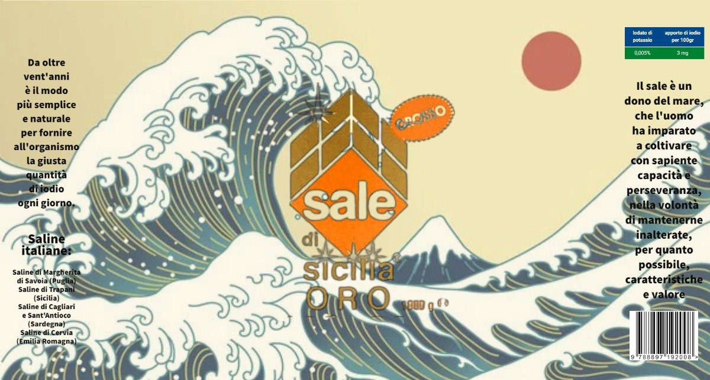

Durante la settimana di stage del 3° anno al MAST, abbiamo vissuto un'importante esperienza formativa nel mondo del lavoro. Questo progetto ci ha permesso di capire meglio cosa significhi collaborare, rispettare le scadenze e contribuire attivamente alla realizzazione di un’idea concreta.
Abbiamo affrontato sfide nuove, mettendo in pratica ciò che fino a quel momento avevamo studiato solo in teoria.
Gli studenti sono stati divisi in piccoli gruppi, ciascuno con il compito di sviluppare un progetto sostenibile. Questa scelta ha favorito la collaborazione, la suddivisione delle responsabilità e lo sviluppo delle competenze trasversali come la comunicazione, il problem solving e il lavoro in team.
Ogni gruppo ha avuto piena autonomia nelle decisioni progettuali, ma ha anche dovuto presentare periodicamente i progressi, come in un vero contesto aziendale.
L’obiettivo principale dell’attività era rinnovare un oggetto di uso quotidiano rendendolo più ecosostenibile e interessante per il mercato attuale. Abbiamo dovuto ripensare materiali, funzionalità, estetica e modalità di presentazione, tenendo conto dell’impatto ambientale.
Questa fase ha richiesto ricerche su materiali alternativi, studio delle abitudini dei consumatori e valutazione dell’impatto ambientale delle soluzioni proposte.
Nel nostro caso, abbiamo scelto di rinnovare un tubetto di sale. L’idea era trasformare un oggetto semplice e comunemente usato in qualcosa di più sostenibile e moderno, mantenendone la funzionalità ma riducendone l'impatto ambientale.
Il nuovo design è stato realizzato utilizzando carta riciclata per l’involucro esterno, e materiali biodegradabili per l’interno. Inoltre, abbiamo curato molto l’aspetto grafico del packaging, per comunicare chiaramente il messaggio di sostenibilità.
Qui sotto potete vedere un esempio della carta illustrata che abbiamo progettato per l’esterno del tubetto:
